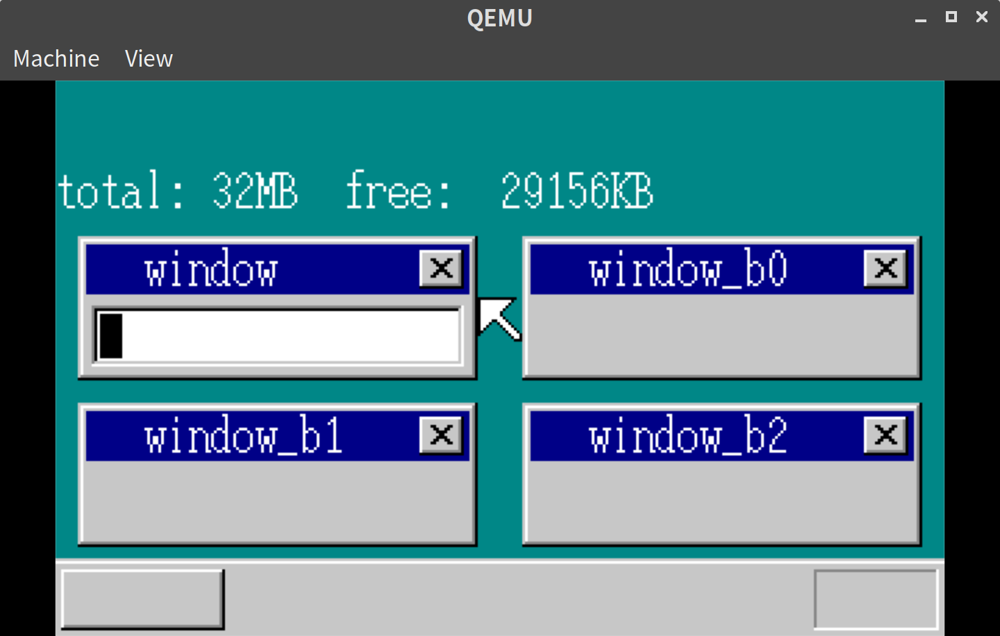
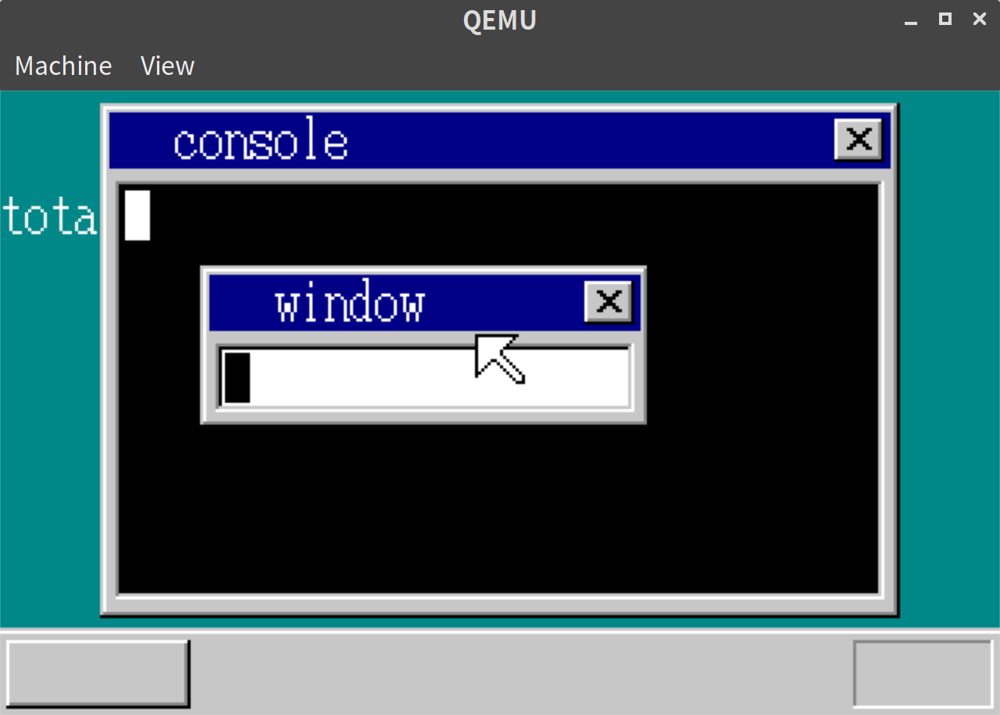
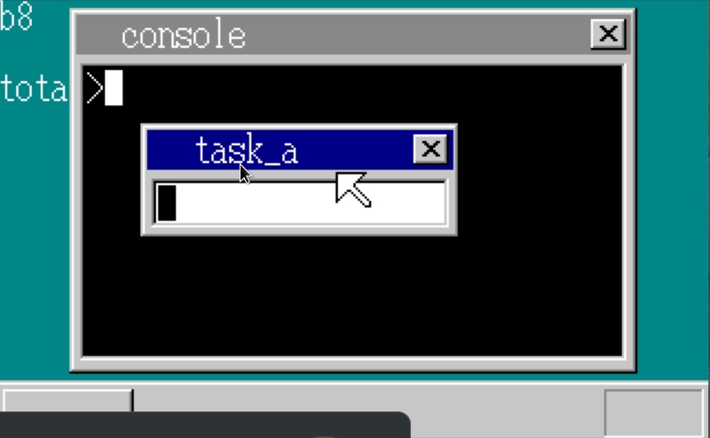

「30日でできる！OS自作入門」をRustで。17日目
「30日でできる！OS自作入門 」のC言語の部分をできるだけRustですすめてみる。今回は17日目の内容。
アイドルタスクを作成する
現在タスクA(メインのharibote_os)とタスクBが3種類ある状態となっている。
これでタスクBをすべて起動しない場合、タスクAはスリープしようとするが、切り替える先のタスクがなくなってしまう。
この問題を解消するため、アイドル(hlt)するだけのタスクを最初に設定するようにする。
// mt.rs
pub fn init(&mut self, memman: &mut MemMan) -> Result<usize, &'static str> {
for i in 0..MAX_TASKS {
let mut task = &mut self.tasks_data[i];
task.select = (TASK_GDT0 + i as i32) * 8;
let gdt =
unsafe { &mut *((ADR_GDT + (TASK_GDT0 + i as i32) * 8) as *mut SegmentDescriptor) };
*gdt = SegmentDescriptor::new(103, &(task.tss) as *const TSS as i32, AR_TSS32);
}
let task_index = self.alloc()?;
{
let mut task = &mut self.tasks_data[task_index];
task.flag = TaskFlag::RUNNING;
task.priority = 2;
task.level = 0;
}
self.add_task(task_index);
self.switchsub();
let task = self.tasks_data[task_index];
load_tr(task.select);
let timer_index_ts = TIMER_MANAGER.lock().alloc().unwrap();
TIMER_MANAGER
.lock()
.set_time(timer_index_ts, task.priority as u32);
unsafe {
MT_TIMER_INDEX = timer_index_ts;
}
// ここから
{
let idle_index = self.alloc().unwrap();
let mut idle = &mut self.tasks_data[idle_index];
idle.tss.esp = memman.alloc_4k(64 * 1024).unwrap() as i32 + 64 * 1024;
idle.tss.eip = task_idle as i32;
idle.tss.es = 1 * 8;
idle.tss.cs = 2 * 8;
idle.tss.ss = 1 * 8;
idle.tss.ds = 1 * 8;
idle.tss.fs = 1 * 8;
idle.tss.gs = 1 * 8;
self.run(idle_index, MAX_TASKLEVELS as i32 - 1, 1);
}
Ok(task_index)
}タスクBがをrunしないようにする。
// コメントアウト
// task_manager.run(task_b[i], 2, (i + 1) as i32);実行結果
以下の通り、前回までのカウンター表示がないが、無事に動いている。

コンソール画面の表示
本ではこの後、コンソール画面を作っていく。こちらも本の流れにそって実装していく。
// lib.rs
const CONSOLE_WIDTH: usize = 256;
const CONSOLE_HEIGHT: usize = 165;
let shi_console = sheet_manager.alloc().unwrap();
let buf_console = memman
.alloc_4k((CONSOLE_WIDTH * CONSOLE_HEIGHT) as u32)
.unwrap() as usize;
sheet_manager.set_buf(
shi_console,
buf_console,
CONSOLE_WIDTH as i32,
CONSOLE_HEIGHT as i32,
None,
);
make_window(
buf_console,
CONSOLE_WIDTH as i32,
CONSOLE_HEIGHT as i32,
"console",
);
make_textbox(
buf_console,
CONSOLE_WIDTH as isize,
8,
28,
240,
128,
Color::Black,
);
let console_task_index = task_manager.alloc().unwrap();
let mut console_task_mut = &mut task_manager.tasks_data[console_task_index];
let console_esp = memman.alloc_4k(64 * 1024).unwrap() + 64 * 1024 - 8;
console_task_mut.tss.esp = console_esp as i32;
console_task_mut.tss.eip = console_task as i32;
console_task_mut.tss.es = 1 * 8;
console_task_mut.tss.cs = 2 * 8;
console_task_mut.tss.ss = 1 * 8;
console_task_mut.tss.ds = 1 * 8;
console_task_mut.tss.fs = 1 * 8;
console_task_mut.tss.gs = 1 * 8;
let ptr = unsafe { &mut *((console_task_mut.tss.esp + 4) as *mut usize) };
*ptr = shi_console;
task_manager.run(console_task_index, 2, 2);
sheet_manager.slide(shi_mouse, mx, my);
sheet_manager.slide(shi_console, 32, 4);
sheet_manager.slide(shi_win, 64, 56);
sheet_manager.updown(shi_bg, Some(0));
sheet_manager.updown(shi_console, Some(1));
sheet_manager.updown(shi_win, Some(2));
sheet_manager.updown(shi_mouse, Some(3));まずはtask_b_main用の準備をしていたところを書き換えて、console_taskというタスクをよびだすようにする。
同時にコンソールの見た目をつくる。
// lib.rs
pub extern "C" fn console_task(sheet_index: usize) {
use asm::{cli, sti};
use fifo::Fifo;
use mt::{TaskManager, TASK_MANAGER_ADDR};
use sheet::SheetManager;
use timer::TIMER_MANAGER;
use vga::{boxfill, Color};
let task_manager = unsafe { &mut *(TASK_MANAGER_ADDR as *mut TaskManager) };
let task_index = task_manager.now_index();
let fifo = Fifo::new(128, Some(task_index));
let fifo_addr = &fifo as *const Fifo as usize;
let cursor_x: isize = 8;
let mut cursor_c: Color;
let sheet_manager_addr = unsafe { SHEET_MANAGER_ADDR };
let sheet_manager = unsafe { &mut *(sheet_manager_addr as *mut SheetManager) };
let timer_index = TIMER_MANAGER.lock().alloc().unwrap();
TIMER_MANAGER.lock().init_timer(timer_index, fifo_addr, 1);
TIMER_MANAGER.lock().set_time(timer_index, 50);
loop {
cli();
if fifo.status() == 0 {
task_manager.sleep(task_index);
sti();
} else {
let i = fifo.get().unwrap();
sti();
if i <= 1 {
if i != 0 {
TIMER_MANAGER.lock().init_timer(timer_index, fifo_addr, 0);
cursor_c = Color::White;
} else {
TIMER_MANAGER.lock().init_timer(timer_index, fifo_addr, 1);
cursor_c = Color::Black;
}
TIMER_MANAGER.lock().set_time(timer_index, 50);
boxfill(
sheet_manager.get_buf_addr(sheet_index),
sheet_manager.sheets_data[sheet_index].width as isize,
cursor_c,
cursor_x,
28,
cursor_x + 7,
43,
);
sheet_manager.refresh(sheet_index, cursor_x as i32, 28, cursor_x as i32 + 8, 44);
}
}
}
}console_taskはこのようにharibote_osでやっているようにカーソルが表示されるようにする。
実行結果
以下の通り、コンソール風の画面が表示された。

文字入力の切り替え
コンソール画面にもフォーカスを切り替えて文字入力ができるようにする。
Tabキーの入力をうけとり、フォーカスするウィンドウを切り替える。
あまり面白い箇所はないので、詳細な差分はGitHubのcommit log参照として、重要なところだけ記載する。
// lib.rs
// タブは0x0f
if key == 0x0f {
if active_window == 0 {
active_window = 1;
// windowタイトルの表示切替
} else {
active_window = 0;
// windowタイトルの表示切替
}
}文字入力については、文字入力用のstruct Taskにfifoを持たせて、そのfifo経由でやりとりする。
これでfifoからtask、taskからfifoの双方向の参照ができ、若干気持ち悪さが増したが、一旦気にせずそのまま進める。
// lib.rs
// 通常の文字入力の表示
if KEYTABLE[key as usize] != 0 {
if active_window == 0 {
if cursor_x < max_cursor_x {
write_with_bg!(
sheet_manager,
shi_win,
144,
52,
cursor_x,
28,
Color::Black,
Color::White,
1,
"{}",
KEYTABLE[key as usize] as char,
);
cursor_x += 8;
}
} else {
// consoleのタスクに保持しているfifoに送る
let ctask = task_manager.tasks_data[console_task_index];
let fifo = unsafe { &*(ctask.fifo_addr as *const Fifo) };
fifo.put(KEYTABLE[key as usize] as u32 + KEYBOARD_OFFSET)
.unwrap();
}記号入力、大文字小文字の切り替えができるようにする
記号入力や大文字、小文字の切り替え用に、Shiftキー、CapsLockキーの処理も追加していく。
このあたりも素直な実装なので、差分の詳細はGitHubのcommit logを参照とする。
まずはShiftキーのハンドリングから説明する。
// lib.rs
// Shiftキーの状態保持用にtupleを定義する。(左シフト、右シフト)となるようにする
let mut key_shift = (false, false);
// 省略..
// loop内にShiftキーのハンドリングを追加する
// 左シフト ON
if key == 0x2a {
key_shift.0 = true;
}
// 右シフト ON
if key == 0x36 {
key_shift.1 = true;
}
// 左シフト OFF
if key == 0xaa {
key_shift.0 = false;
}
// 右シフト OFF
if key == 0xb6 {
key_shift.1 = false;
} 次にkeyboard.rsに追加した*Lock系のキーの状態管理用のstructとShiftキーを押したとき用のKEYTABLEを説明する。
// keyboard.rs
// Shiftをおしていないとき用のKEYTABLE
pub static KEYTABLE0: [u8; 0x80] = [
// 省略
];
// Shiftをおしているとき用のKEYTABLE
pub static KEYTABLE1: [u8; 0x80] = [
// 省略
];
// CapsLockの初期状態はbootinfoからとってくる
#[derive(Debug, Clone, Copy, PartialEq, Eq)]
pub struct LockKeys {
pub scroll_lock: bool,
pub num_lock: bool,
pub caps_lock: bool,
}
impl LockKeys {
pub fn as_bytes(&self) -> u8 {
let mut result: u8 = 0;
result += if self.scroll_lock { 1 } else { 0 };
result += if self.num_lock { 2 } else { 0 };
result += if self.caps_lock { 4 } else { 0 };
result
}
}
lazy_static! {
pub static ref LOCK_KEYS: LockKeys = {
let keys = unsafe { *(0x0ff1 as *const i16) };
let keys = keys >> 4;
LockKeys {
scroll_lock: (keys & 1) != 0,
num_lock: (keys & 2) != 0,
caps_lock: (keys & 4) != 0,
}
};
}あとはこれらを使って、適切な文字が表示されるようにする。
// lib.rs
// haribote_os()のloop内処理
let mut chr = 0 as u8; // 文字コード保持用の変数
if key < KEYTABLE0.len() as u32 {
if key_shift == (false, false) {
chr = KEYTABLE0[key as usize];
} else {
chr = KEYTABLE1[key as usize];
}
}
if b'A' <= chr && chr <= b'Z' {
// アルファベットの場合、ShiftキーとCapsLockの状態で大文字小文字を決める
if !lock_keys.caps_lock && key_shift == (false, false)
|| lock_keys.caps_lock && key_shift != (false, false)
{
chr += 0x20;
}
}実行結果
以下の通り、コンソールとtask_aウィンドウへのフォーカスの切り替え、および記号や小文字の入力ができるようになった。

17日目は以上となる。ここまでの内容のコードはyoshitsugu/hariboteos_in_rustのday17としてタグを打ってある。